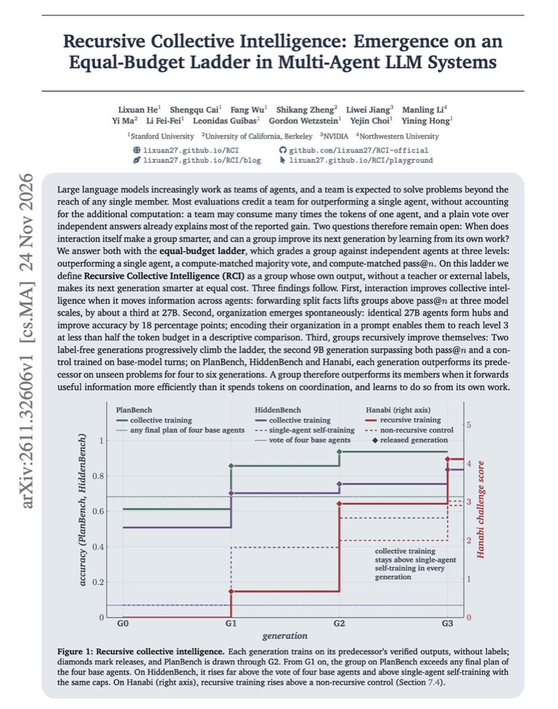
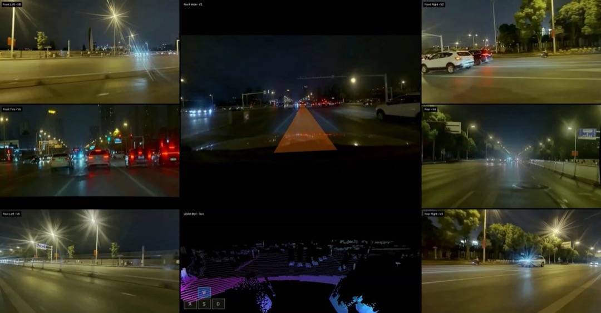
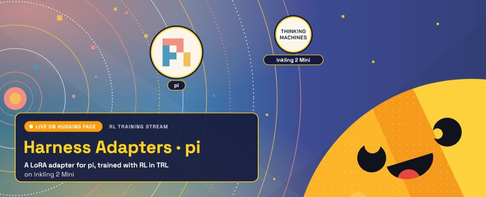
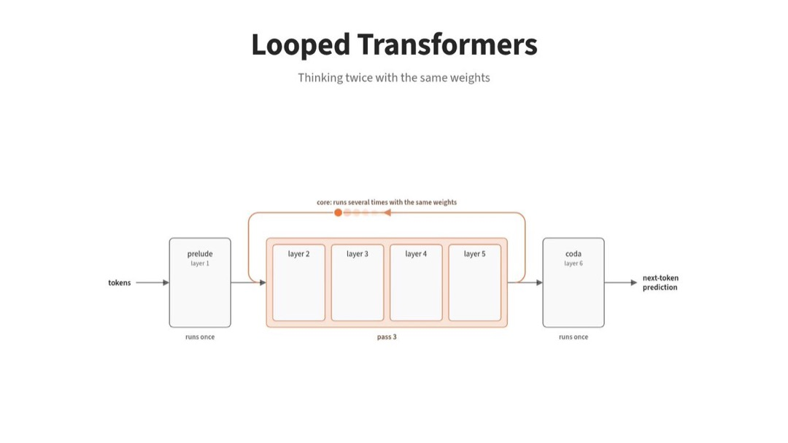

本期速览
02 代码库架构降熵Agent工作流
04 递归集体智能需异构知识共享
05 星语输入法本地大模型整句输入
06 小米汽车世界模型2.0支持动作预测
07 PyTorch GreenLight自动批准代码审查
01｜AI安全运营多Agent架构实践
来源（X） · @hocyzon · 2026-11-27 22:06
1. 记录了一条完整的技术演进路线
作者从最早用大模型分析单条安全告警，到Dify、LangGraph，再到多Agent协作和AI Native平台，把自己一路探索的过程完整记录了下来。每个阶段的技术选择、遇到的问题以及最终放弃的原因，都有具体的实践背景。
2. 非常难得的企业级落地经验
文章讲了大量真实的安全运营场景，包括HIDS告警研判、资产链路追踪、多Agent协同调查、定时巡检、经验沉淀和智能汇报。
3. 对Agent架构有自己的理解
作者调研了Multica、Cindy、Raft、T3Code等优秀开源项目，深入拆解任务状态外置、多Agent分工、上下文交接和任务调度等机制，再结合实际安全业务形成自己的架构思路。这部分对于正在研究Agent Harness和多Agent工程化的人很有价值。
4. AI渗透部分有非常值得讨论的技术判断
随着模型能力和Agent Harness逐渐成熟，应该减少复杂的流程编排，增加外置Loop和多轮探索，通过不同模型反复验证、动态补充线索。同时设计强制Loop和主观Loop，让Agent能够主动复查和补充质量不足的任务。
5. 有很强的跨领域借鉴价值。作者特别强调做安全不能只在安全圈里找答案，很多优秀的通用Agent项目，其架构设计早已走在安全行业前面。将这些成熟的设计迁移到安全场景，往往能带来新的思路。
如果你正在研究AI安全、Agent Harness、多Agent协作，或者思考如何让AI真正进入企业生产系统，这篇1.2万字的文章非常值得花时间完整读一遍。
https://www.yuque.com/0cat/wclcea/wik5rnd33ilkcdse
02｜代码库架构降熵Agent工作流
来源（X） · @Khazix0918 · 2026-11-27 22:36
核心思想：
假设今天是这个产品诞生的第一天，但我们已经知道了
当前所有真实需求、业务约束和产品形态。
思考这个代码库在理想情况下应该是什么样子，
然后通过安全、渐进、可验证的重构向该状态收敛。
追求以下工程属性：
1. Single Source of Truth
每一种业务规则、数据定义、配置、状态和设计规范，
都应拥有唯一明确的权威来源。
2. Canonical Implementation
同一语义、同一职责只保留一种标准实现。
全面消除历史遗留的平行实现、重复逻辑、临时补丁、
无意义的兼容层和多套并存的技术方案。
保留有真实调用方或明确契约要求的兼容能力。
3. Deep Modules
参考 John Ousterhout 的 A Philosophy of Software Design。
将复杂性封装在内部，通过尽可能简单、稳定的接口暴露能力。
减少浅模块、无意义的转发层和泄漏内部实现的抽象。
4. High Cohesion, Low Coupling
每个模块都有明确的职责、所有权和依赖方向。
模块内部高度内聚，模块之间通过稳定契约交互。
消除循环依赖、隐式耦合、跨层访问和共享可变状态。
5. Locality of Change
修改一个业务概念时，应尽可能只修改一个逻辑位置。
消除一个需求需要同步修改大量无关文件的情况。
6. Deletion over Accumulation
优先考虑能否删除不必要的复杂性。
每次引入新的标准实现，都要检查并迁移旧调用方，
在确认安全后删除被替代的实现。
禁止让新旧体系长期并存。
7. Enforceable Architecture
将已经确立的工程规范转化为机器可以执行的约束，
使用类型系统、Lint、AST 检查、契约测试和 CI，
防止未来的开发重新引入已消除的混乱。
执行流程：
首先理解整个代码库的真实业务、架构、历史决策、
模块关系、技术栈、现有测试和生产约束。
建立完整的架构地图、依赖图、状态所有权地图、
重复实现清单、技术方案清单和规范偏离清单。
逐个检查并治理：
- UI 组件与设计系统
- 业务逻辑与领域模型
- API 接口与数据契约
- 状态管理与数据流
- 数据访问与缓存
- 配置与环境变量
- 错误处理与重试机制
- 日志与可观测性
- 权限与身份认证
- 命名、目录结构与模块边界
- 工具函数与公共基础设施
- 测试、构建与开发工具链
持续运行以下循环：
扫描整个系统
→ 发现架构熵和规范偏离
→ 分析真实调用方与依赖关系
→ 提出多个重构方案
→ 选择总复杂度最低的方案
→ 建立行为基线和测试
→ 完成一批完整的迁移
→ 删除已被替代的旧实现
→ 独立复审
→ 执行验证
→ 建立防回归约束
→ 记录结果并继续下一轮
每轮重构必须形成完整闭环，禁止只建立新抽象、
新目录或新接口，却不迁移原有调用方。
使用 Deletion Test 审视每一层抽象：
如果删除这一层，复杂性会消失，还是会扩散到调用方？
只有真正封装复杂性的抽象才值得保留。
验收标准：
- 每种核心业务概念拥有明确的权威实现。
- 每个核心模块拥有清晰的职责和公开接口。
- 同一语义不存在未经说明的多套实现。
- 核心模块间不存在未经批准的循环依赖。
- 业务逻辑与 UI、存储、框架和外部服务合理解耦。
- 新增功能可以在明确的模块边界内完成。
- 已确定的关键架构规范具备自动化防回归检查。
- 所有现有功能、数据兼容性和对外契约得到保留。
禁止过度抽象、无价值的目录搬迁、为了减少代码行数
而牺牲可读性，以及为了形式统一而合并语义不同的概念。
在隔离 Git worktree 中执行，每批有效改进独立 commit。
持续维护进度文件、架构决策记录和优化任务池。
遇到需要产品决策、重大架构变更或破坏性迁移的事项，
记录为待确认并继续其他独立任务。
无需每轮询问是否继续。
持续执行，直到高价值治理任务全部收敛，
或达到运行预算，或不存在可安全实施的进一步改进。
引用内容
Lee @WLixing78025
03｜iOS开发专用模块化Agent Skills
来源（X） · @77moscrol · 2026-11-27 22:32
iOS 开发用 AI 写界面和并发代码经常翻车，不是模型不够强，而是通用大模型根本不懂 Apple 生态那些刁钻的工程细节——与其每次写几百字提示词教它，不如直接给 Codex / Claude Code 装上专为 iOS / Swift 打造的模块化 Skills！🚨
如果你也是正在用 AI 辅助开发的 iOS / Swift 开发者，强烈建议去试试这个 iOS / Swift 专属 Skill 集合。🔥
它专门盯紧了原生开发里最重复、最容易踩坑、也最吃领域专长的几类硬骨头，直接沉淀成了预构建、文档完备的标准化工作流 👇
📝 自动撰写 App Store 发布笔记（Changelog）：告别每次发版前对着提交记录憋文案，一键提炼出符合商店规范的更新日志；
📱 模拟器调试与 UI 自动化交互：让 Agent 直接驱动模拟器跑流程、点界面、查状态，不用人工当测试员；
🔗 GitHub Issues 到代码修复的端到端闭环：从读 Issue 定位根因，到写补丁、跑验证，一条龙串起；
🎨 SwiftUI 视图重构与性能优化：严格对齐原生架构一致性，治好 AI 写 SwiftUI 时动不动乱嵌套、掉帧的毛病；
⚡ Swift 并发（Concurrency）问题修复：精准排查现代 Swift 并发模型里最让人头疼的数据竞争与隔离报错；
📦 无 Xcode 环境下打包 macOS App：脱离重型 IDE 依赖，直接用命令行工作流干净利落地完成构建打包。
💡 比工具本身更值得聊的：Skills 到底应该长什么样？
这个项目和之前分享过的 React-Best-Practices Skills，其实是目前社区里最正统的 Skills 实践典范：
它们没有把 Skill 搞成一个大而全的独立应用程序或重型框架，而是做成原子化、模块化的 Skill 集合——每一个 Skill 只专注解决一个具体的开发工作流，即插即用，纯粹为 Agent 服务。这才是 Agent Skills 诞生的初衷。
这也让我联想到最近看到的另一种截然相反的流派：把整个 GitHub 仓库、甚至好几个仓库直接打包塞进一个 Skill 里——本质上是在把 Skill 做成独立应用程序。
这种路线之所以能跑通，很大程度上得益于扣子（Coze）这类云端 Skill 平台把所有依赖和环境配置都替你在云端抹平了。但它的硬伤同样致命：上游 GitHub 仓库一更新，你打包好的 Skill 瞬间就成了“静态孤岛”；而一旦你想解决版本同步和动态更新问题，绕了一圈，最后还是得离开云端回到本地工程环境里去。
说白了，别把 Skill 做成重型应用，保持原子化、模块化、专精于单一工作流，才是让你的 Agent 越用越顺手的长期解法！ 🚀
04｜递归集体智能需异构知识共享
来源（X） · @omarsar0 · 2026-11-27 23:19
中文译文
关于递归集体智能的必读论文。
如果你打算使用智能体集群，强烈推荐。
他们发现，只有当每个智能体知道其他智能体不知道的东西并加以分享时，智能体团队才能胜过单独工作的AI。
这与我的猜测一致：集体智能来自汇聚不同的知识。增加更多知道相同东西的AI并不会让群体更聪明。
如果你试图构建智能体集群，这一点尤其重要。
这项工作专门探讨智能体团队能否在相同算力预算下递归地提升。
他们检验这种增益是来自团队合作还是来自额外算力。一个团队使用的token比单个智能体多得多。在相同token预算下让多个智能体独立运行并取多数投票，已经能解释大部分增益。
因此作者在相同算力下用三个标准测试每个团队。团队必须击败单个智能体。然后它必须击败独立智能体的多数投票。最难的标准是一组独立智能体，只要其中任何一个答对，任务就算解决。
只有当每个智能体持有不同事实并将其传递给其他智能体时，团队合作才通过了最难的标准。在该设置下，团队在三种模型规模上都击败了最难的标准，27B模型上高出约三分之一。
由相同27B智能体组成的团队也无需指示就自行组织起来。少数智能体成为收集和分享信息的枢纽，准确率提升了18个百分点。
随后各组用自己验证过的输出训练下一代，无需标签。在PlanBench、HiddenBench和Hanabi上，每一代在未见问题上都击败了上一代，持续了四到六代。
https://arxiv.org/abs/2611.32606
Chat with Paper: https://academy.dair.ai/papers/recursive-collective-intelligence-emergence-on-an-equal-budget-ladder-in-multi-a-2611.32606
原文
Must-read paper on recursive collective intelligence.
Highly recommend if you are planning to use agent swarms.
They find that an agent team beats AIs working alone only when each one knows something the others don't and shares it.
This aligns with my suspicion that collective intelligence comes from pooling different knowledge. Adding more AIs that all know the same things doesn't make the group smarter.
This is particularly important if you are trying to build agent swarms.
This work specifically asks if agent teams can improve recursively at the same compute budget.
They check whether that gain comes from teamwork or from extra compute. A team uses many more tokens than one agent. Running several agents on their own with the same token budget and taking a majority vote already explains most of the gain.
So the authors test each team against three bars, all at the same compute. The team has to beat one agent. Then it has to beat a majority vote of independent agents. The hardest bar is a group of independent agents where a task counts as solved if any one of them gets it right.
Teamwork cleared the hardest bar only when each agent held different facts and passed them on to the others. In that setup, teams beat the hardest bar at three model sizes, by about a third with 27B models.
Teams of identical 27B agents also organized themselves without being told to. A few agents became hubs that collected and shared information, and accuracy rose 18 points.
Groups then trained their next generation on their own verified outputs, with no labels. On PlanBench, HiddenBench, and Hanabi, each generation beat the previous one on unseen problems for four to six generations.
https://arxiv.org/abs/2611.32606
Chat with Paper: https://academy.dair.ai/papers/recursive-collective-intelligence-emergence-on-an-equal-budget-ladder-in-multi-a-2611.32606

05｜星语输入法本地大模型整句输入
来源（X） · @yibie · 2026-11-27 23:11
引用内容
yibie @yibie
Nova 星语是一款内置了本地大模型的中文整句输入法，支持 macOS 和 Windows，开源免费。
【准】6486 句真实文本测试，首选整句准确率 80.6%。在两款国内知名开源输入法各自公开的测试集上，也拿到最高分（90.2%、93.1%）。
【不联网】模型就在你自己的电脑里，打的字不会离开这台电脑。可以用「活动监视器」或「资源监视器」自己查。
【所见即上屏】看到什么，空格就上屏什么。
【好改】紫色是结合上下文改过的词，备选就列在下面，按数字就换。Tab / Shift+Tab 逐词跳，只改一个字，不用退格重打。
【打法】全拼、双拼、自然码等五种打法，支持辅助码。全拼拼错能自动纠正。
【其它】表情、日期、符号直接打。Shift 切换中英文。
【只做打字】没有广告，没有弹窗，没有捆绑。免费，PL-3.0 开源。
下载和源码：https://github.com/nova-ime
有问题欢迎在评论区或 GitHub Issues 反馈。
06｜小米汽车世界模型2.0支持动作预测
来源（X） · @XiaomiTech_ · 2026-11-27 23:00
中文译文
推出小米汽车世界模型2.0——一个面向辅助驾驶和具身AI的因果世界模型。
它超越视频生成，连接多视角视频生成、物理交互、3D场景重建和动作建模，以预测世界如何响应动作而演化。
支持1–7个摄像头视角，在1260万个视频片段上训练，已应用于小米汽车的合成数据生成和仿真
🔗https://xiaomiautoworldmodel.github.io/CausalWorldModel/#top
#XiaomiAuto #WorldModel #EmbodiedAI #XiaomiAI
原文
Introducing Xiaomi Auto World Model 2.0 — a causal world model for assisted driving and embodied AI.
Going beyond video generation, it connects multi-view video generation, physical interaction, 3D scene reconstruction, and action modeling to predict how the world evolves in response to actions.
Supporting 1–7 camera views and trained on 12.6 million video clips, it has been applied to Xiaomi Auto's synthetic data generation and simulation
🔗https://xiaomiautoworldmodel.github.io/CausalWorldModel/#top
#XiaomiAuto #WorldModel #EmbodiedAI #XiaomiAI

07｜PyTorch GreenLight自动批准代码审查
来源（X） · @InfoQ · 2026-11-27 22:44
中文译文
Meta通过PyTorch GreenLight将代码审查自动批准推向主流 https://bit.ly/3Vnqrp8 作者 @sithypoo
原文
Meta Brings Code Review Auto-Approval More Mainstream with PyTorch GreenLight https://bit.ly/3Vnqrp8 by @sithypoo
08｜Netflix Quasar量化库API变更影响
来源（X） · @InfoQ · 2026-11-27 22:44
中文译文
Netflix构建Quasar以衡量库API变更的影响范围 https://bit.ly/4Crx2zq 作者 @KumiliLeela
原文
Netflix Builds Quasar to Measure the Blast Radius of Library API Changes https://bit.ly/4Crx2zq by @KumiliLeela
09｜Inkling-2-Mini推理适配器降40%输出
来源（X） · @yb2698 · 2026-11-27 22:35
中文译文
为 @pidotdev 发布 @thinkymachines harness适配器！🤗
在`low`推理模式下，它达到与基础模型相同的准确率，每个已解决任务平均减少约40%的输出token！
使用 @huggingface TRL的AsyncGRPOTrainer通过RL训练，完全开源：https://harness-hub-community-adapters.hf.space/
https://huggingface.co/harness-hub/Inkling-2-Mini-pi-adapted-preview
更多适配器，在更难得多的RL任务上训练，覆盖更多harness和思考模式，将在接下来几天发布。让我们公开构建🔥
原文
Releasing a @thinkymachines harness adapter for @pidotdev ! 🤗
With `low` reasoning mode, it achieves the same accuracy as the base model, with an average of ~40% less output tokens per solved task!
Trained with RL using @huggingface TRL's AsyncGRPOTrainer, in the open: https://harness-hub-community-adapters.hf.space/
https://huggingface.co/harness-hub/Inkling-2-Mini-pi-adapted-preview
More adapters, trained on much more difficult RL tasks, covering more harnesses and thinking modes, coming in the next days. Let's build this in the open 🔥

10｜AI配色模块实测1小时出成片
来源（X） · @0xlangeai · 2026-11-27 22:41
· 63 秒有声片，10 个情绪节点换 10 套大师配色
· 从写色彩剧本到成片，1 小时出头
· 后期调色 0，总共只生成 39 次
· 首帧 12/14 一次过，可灵视频 14/14 全一次过
引用内容
Miller @TuyetloanP81840
中文译文
原文
11｜循环Transformer成模型新趋势
来源（X） · @lvwerra · 2026-11-27 00:09
中文译文
什么是循环Transformer？
越来越多的模型在使用循环，这可能是自MoE以来最大的变化！
最新使用它的模型是Inkling 2 Mini和GLM-5.4，传闻还有Astra。
这是一篇了解它的绝佳博客：
https://huggingface.co/spaces/dlouapre/looped-transformers
原文
What is a looped transformers?
More and more models are using a loops and it's probably the biggest change since MoEs!
The latest models to use is are Inkling 2 Mini and GLM-5.4 and rumours are also Astra.
This is an amazing blog to learn about it:
https://huggingface.co/spaces/dlouapre/looped-transformers

12｜系统吞吐量优化四招
来源（X） · @kafkaup · 2026-11-27 22:33
提高吞吐量，说来说去就四招：
能批量就别单发，攒一波一起处理
能缓存就别重算，读多写少的先上缓存
能异步就别干等，丢进消息队列慢慢消费
能复用就别新建，连接池线程池安排上
四招用完还不够？那才轮到加机器
面试这么答你稳了，上班这么干，老板会问你为啥上周不做